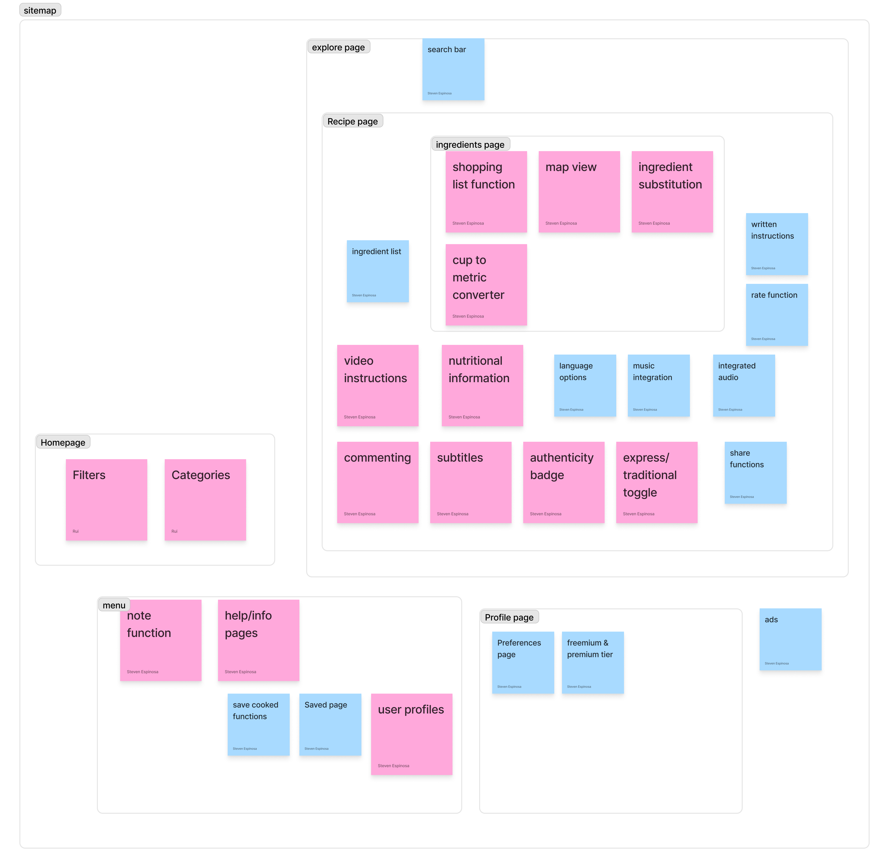
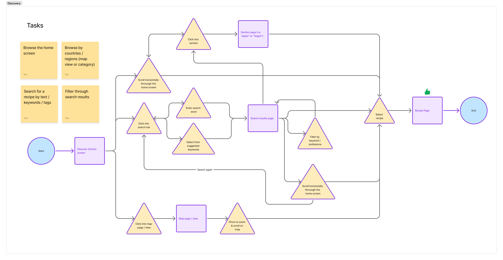
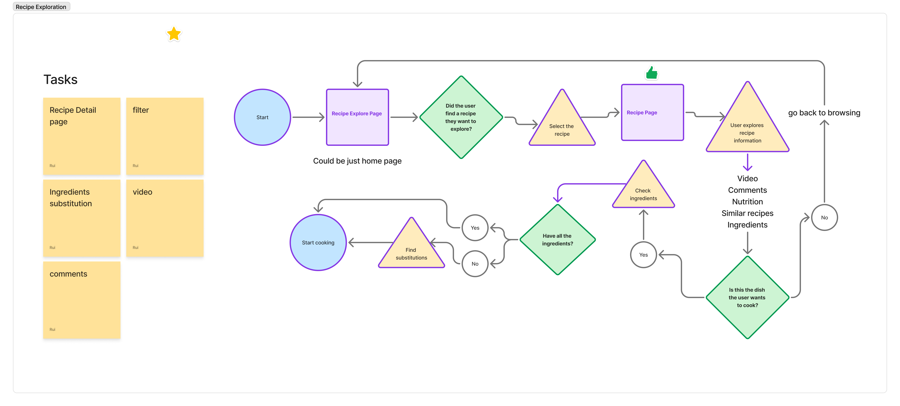
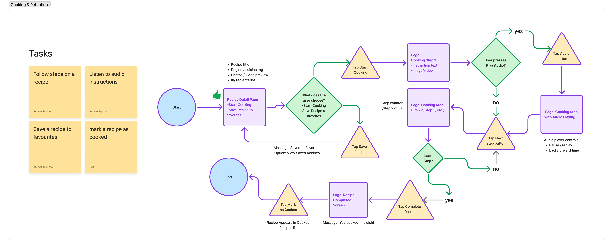
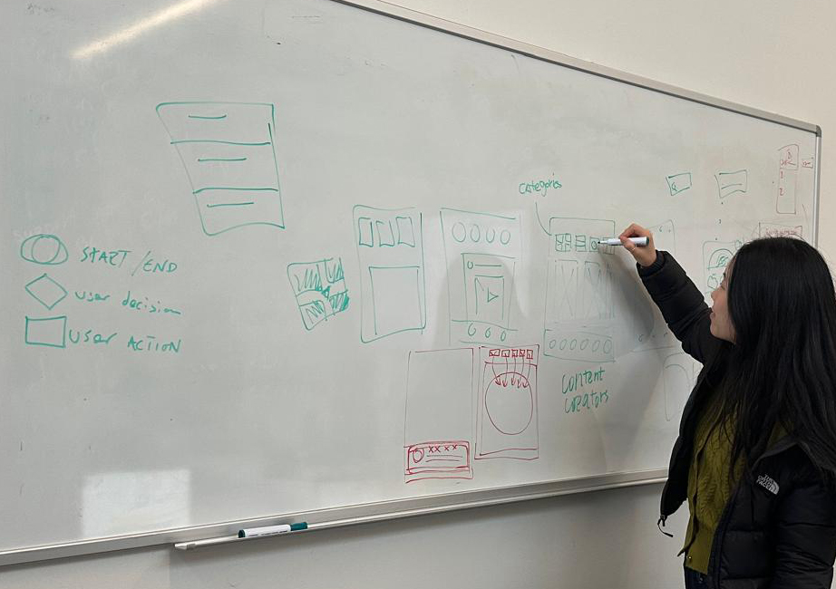

Where Food Travels.
COOKA started with a question: what happens to a recipe when you strip away its culture? This case study is our attempt to design that culture back in.

Who here doesn't cook?
It started with a question our teammate, Steven, kept returning to: when people from different countries meet, food is almost always the first topic, where you're from, what's authentic, who cooks it "right." Food is how we talk about culture. But could most of us actually cook the dishes we debate so confidently?
For many, the answer is no. Cooking often feels routine and uninspired. Most learning paths assume prior skill, strip out cultural context, or bury the recipe under someone's childhood story, making it hard to cook something that feels personal or authentic.
That gap, between wanting to connect with culture through food and actually being equipped to cook it, became the starting point for our research.
 Screenshots via Instagram, TikTok, YouTube, goodfood.com.au, and Pinch of Yum
Screenshots via Instagram, TikTok, YouTube, goodfood.com.au, and Pinch of Yum
Intimidation
Recipes assume a baseline of skill that many home cooks don't have, turning curiosity into hesitation before they even start.
Erasure
Dishes get flattened into "hacks" and trends, losing the regional and historical roots that gave them meaning.
Guesswork
Without cultural context, home cooks can't tell what's authentic, adapted, or simply wrong, so they default to what's familiar.
What we did to understand the problem.
We started with discovery: secondary research to orient the team and get familiar with the domain, its terminology, and the factors shaping it. We explored websites, publications, and case studies, then organized findings on our project board to guide the rest of the research.
My focus was on the competitive landscape, mapping out how existing cooking apps balance curation and convenience against depth and education, alongside refining the questions that shaped our stakeholder and user interviews.


Three clusters emerged from the map:
Instagram, YouTube, Tasty
HelloFresh, Instacart, Paprika, Sidekick
Rouxbe, Kitchen Stories
Then COOKA sits in a relatively open space: high educational value + deeply culturally curated.
That whitespace tells a compelling story: users can already learn recipes, get groceries, or browse cooking videos, but there isn't a platform dedicated to helping them explore cultures through cooking in a cohesive, curated way.
Content Research

Cultural Research

Drafting Problem Statements

Designing the questions that shaped our research.
Alongside the desk research, we drafted and refined the questions we'd bring to stakeholder and user interviews, then built a short survey to pressure-test our assumptions at a larger scale before we started designing.
Preparation Work for InterviewAs a team, we each contributed to preparation work that organically shaped our final interview questions. By extracting key words from our draft problem statements, we identified the target audiences most relevant to our research. From there, we asked ourselves what we actually wanted to learn from them, drafted interview questions, and fine-tuned them by layering in additional questions as gaps emerged.
Finding Key Words

Target Audience

What We Want to Know

Draft Questions

Additional Questions

We focused on people who care about authentic cooking, especially immigrants and expats who use food to stay connected to home, and curious cooks who want to learn other cultures' food the right way, not watered down.
We conducted semi-structured interviews, which allowed us to ask consistent questions while still leaving room for personal stories, cultural context, and unexpected insights around authenticity, trust, and daily cooking habits.
We interviewed 5 participants, ages 25 to 34, living in Vancouver, from diverse cultural backgrounds. They ranged from creatives and tech professionals to service workers, giving us a mix of emotional, practical, and efficiency-driven perspectives on cooking.
We conducted two rounds of interviews. After the first interview, we realized that our initial questions weren't effectively addressing the problems we were trying to understand. We revisited and refined our questions to better uncover the underlying needs and core problems we wanted to explore.
After the interviews, we had a clearer understanding of the assumptions and biases we needed to challenge and validate through our survey. As a team, we carefully reviewed each draft question, questioning its wording, intent, and perspective. We refined the questions through multiple rounds of discussion until we were confident that the survey would generate unbiased and meaningful insights.
How often do you feel "guilty" or "unsatisfied" because you chose a quick meal over a traditional/cultural one?
Our interviews taught us that people don't have the time or mental capacity to reflect on their cooking choices in the moment, the question assumed a level of self-reflection most participants didn't relate to.
Instead, we wanted to find out whether cultural connection meant something to people at all, so we built a dedicated section around it.
How important is it for you to cook meals that reflect your cultural heritage?
How often do you feel "homesick" or nostalgic for the specific flavours of your childhood or home country?
We used ChatGPT to refine the response ranges we developed, making sure they were phrased and structured in a way that allowed respondents to answer comfortably and honestly.
What the interview and survey actually told us.
Gathering Interview InsightsAfter talking to users and reviewing survey responses, we pulled everything into one place and looked for patterns rather than one-off opinions. A few common threads kept surfacing across the conversations, echoed by direct quotes that captured how people were experiencing the problem, not just what they said about it.

Summarizing and pulling out key quotes that can help describe what issues or experiences the user is facing as evidence.

Grouping raw quotes and observations into early theme clusters.

Refining the clusters to surface the strongest recurring threads.

Mapping each theme to primary motivations and key frustrations.

Turning the synthesized themes into concrete product recommendations.
In the report, we organized our synthesized insights into Introduction, Participant Information, Methodology, Key Findings, Analysis, Recommendations, Conclusion, and Appendices, giving the whole team a shared, consistent structure to reference throughout the project.
By looking at the data from Google Form summary and Google Sheets, we learned some really important insights as well.
Where do you most often find recipes?
Instagram led as the most frequented platform for recipes at 64.5% of the vote, followed by Google (58.1%) and YouTube (48.4%), while dedicated recipe apps trailed at just 3.2%.
chose health and nutrition as their top priority when picking a recipe.
said cooking meals that reflect their cultural heritage isn't important to them at all, cutting against a core assumption we walked in with.
described one specific cooking or learning experience, like a sushi-making class, that permanently changed how they cook. The decision to try it was almost always random.
Ingredient Flexibility
Users' willingness to start or continue a recipe depends on how they handle missing ingredients.
Technology Use
Users use TikTok and AI assistants to find recipes but struggle with screen interaction while cooking.
Recipe Credibility
Users highly value recipe credibility: when a recipe fails to deliver expected results, it leads to frustration, wasted time, unnecessary expense, and a loss of trust in the cooking experience.
Stepping into our users' shoes.
To make sense of everything we'd heard, we pulled our interview quotes, behaviours, and emotions onto a single empathy map, giving the whole team a shared, grounded picture of who we were designing for before we started defining a direction.
From Sticky Notes to StructureBefore we could synthesize anything, we needed to see it all in one place. We printed transcripts, pulled every quote and observation onto stickies, and worked through two passes together as a team, first mapping empathy, then re-sorting the same notes into pain-point clusters.
.png)
.png)
Trust and authenticity kept resurfacing as their own thread, so we gave it a dedicated affinity map, pulling every quote and note that touched on "is this real," "is this right," or "can I trust this" onto one board and looking for the shape underneath.
.png)
People won't go out of their way to find the most authentic recipe out there, but they will know when it is not and be bothered by it.
With the pain points clustered, we drafted an early value proposition to pressure-test before moving into full product framing.

To move from research insights to a defined feature set, I used story mapping to structure COOKA's functionality. This method was used to scope an MVP, plan releases, and align the team on what to build and in what order, turning a broad list of features into a prioritized, sequenced roadmap grounded in how users actually move through the product.

Pulling the empathy map, the affinity clusters, and the storyboard together, we distilled a second layer of insight, sharper and more specific than what we'd started with.
With the research synthesized, we drafted a first framing of the product itself: what COOKA actually is, where its content comes from, and what problem it's really solving.

Drafting the first framing of the product: what COOKA is, where its content comes from, and the problem it's solving.
COOKA is a culturally contextual recipe inspiration platform that organizes scattered culinary knowledge into meaningful, explorable clusters.
→ discovery
→ execution
"Where Does the Content Come From?"
For MVP, content comes from three layers:
Curated seed database: a small internal recipe library, region-tagged (Japanese / Korean / Caribbean) and technique-tagged (knife style, fermentation, spice layering).
Community contributions: variations, techniques, flavor swaps, and cultural notes added by users.
Existing social data: Instagram / TikTok inspiration, not the content itself but the signal. AI clusters trends, identifies cultural lineage, and connects dishes to context.
"People want new recipes."
People want new food experiences, with meaning.
Functional Pain
- Doesn't know where to source ingredients
- Recipes lack execution clarity
- Platforms are fragmented
Emotional Pain
- Feels like she's missing the "why"
- Wants authenticity without gatekeeping
- Seeks novelty without randomness
Motivations
- Curiosity
- Mastery
- Sensory discovery
COOKA introduces Recipe Clusters: contextual exploration in place of random inspiration.
Random inspiration
Contextual exploration
"Korean Comfort Food"
- 5 core dishes
- Technique notes
- Flavor variations
- Ingredient sourcing tips
- Community insights
Substitutions: flagging what can be swapped without losing the dish's character.
Where to find: pointing to where harder-to-source ingredients are actually available.
Sizing the opportunity.
Alongside the qualitative research, we sized the market to make sure this wasn't just a personal itch: that demand for authentic, culturally-grounded cooking content is real, and growing.
Market Opportunity (TAM / SAM / SOM)Total addressable market for cultural food discovery and cooking content, globally.
Digital cooking consumers in North America, Europe & Australia who value cultural heritage content.
Urban North America: expats and culturally curious home cooks (Years 1 to 2).

Presenting the market analysis: a $32B+ TAM with strong cultural food discovery demand globally.
Using the TAM-SAM-SOM framework from Aulet's Disciplined Entrepreneurship, we sized the opportunity. The total addressable market is huge: over thirty-two billion dollars in digital cooking resources. Our serviceable addressable market narrows that to people in developed markets who actively value cultural content: roughly nine to ten billion. And our realistic obtainable market for early traction is focused: urban centres in North America, particularly Vancouver and Toronto, targeting expats and culturally curious home cooks. We're starting focused and expanding from there.
This lines up with what we found in the competitive landscape earlier: most existing platforms optimize for either convenience or education, rarely both. That gap is exactly where COOKA sits: high educational value, deeply culturally curated.
The Pivot.
Original problem statement vs. refined problem statement
Home cooks are bored with eating the same food, they feel emotionally disconnected from their meals, and existing recipes sources prioritize quick recipes over cultural context, storytelling, and authenticity.
Home cooks are outgrowing traditional recipe sources, they want an immersive gateway into the world's kitchens.
Initial direction vs. where research took us
People want to connect with their own culture through food that feels authentic to their palate.
People want to go somewhere, not just cook something.
Build an app that takes users on a culinary journey, not just a recipe library. Introduce different cultures and create connection through food.
Mapping the user journey.
We put the main features on post it notes and roughed in the overall architecture on the whiteboard to define the information architecture. From there, we mapped the user flow in Figma, translating the information architecture into the step-by-step paths users would take through the app.
Information Architecture




A brand rooted in warmth and culture.


From sketch to screen.
We started with low-fidelity sketches before moving into Figma. The wireframes explored three key areas: recipe discovery, the cooking experience, and cultural learning. As a team, we iterated on different ways to solve each challenge and shape the overall experience.
What we focused onExploration by region + finding recipes.
Recipe details + cooking steps.
Cultural/contextual learning around the recipe.



The hi-fi prototype.
After multiple rounds of usability testing and heuristic evaluation, we landed on a high-fidelity prototype that brings the cultural journey to life.
Explore, Saved, Shopping List and Profile, keeping discovery always one tap away.
Article and cultural story first, then recipe steps. Narrative precedes instruction.
Each country has its own editorial hub: articles, street food spots and featured recipes.
Personalised based on prior exploration history, not just dietary preferences.

Regional hubs featuring highlighted articles, street food, and guided recipe paths.


Newest and most popular recipes surfaced by region, with cultural context throughout.
The Solution.
Region-Specific Exploration
Browse and discover authentic cuisines from specific countries and cultural regions, organised by heritage and story.
Ingredient-Based Discovery
Find meaningful recipes based on what you have or the cultural ingredients you want to explore and learn to use.
Cultural Narrative
Every recipe is paired with cultural stories, heritage context, and background so that cooking becomes an immersive journey.
Community Mode
Connect with others exploring the same cuisines and share your own cultural cooking experiences and discoveries.
What I'd do differently.
We would have benefitted from recruiting a more diverse set of users, particularly people who had migrated and had deep emotional connections to specific cuisines.
Moving into interactive prototypes sooner would have surfaced navigation issues earlier and reduced late-stage rework on the explore flow.
The editorial content model needed more definition early on: how cultural articles and recipes relate to each other at scale required clearer structure.